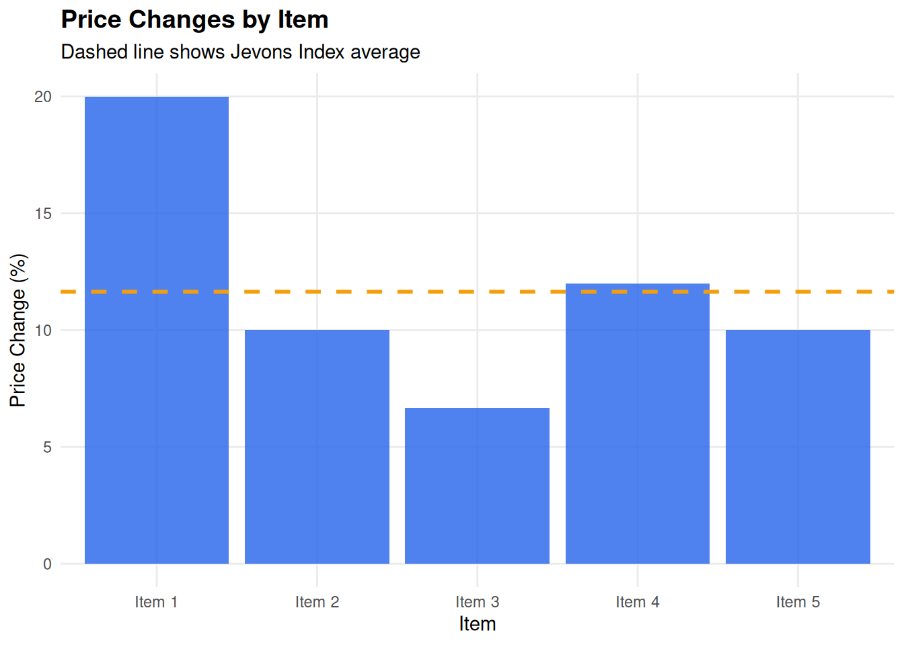

# Function to calculate Jevons Index
jevons_index <- function(prices_current, prices_base) {
# Calculate price relatives
price_relatives <- prices_current / prices_base
# Geometric mean
jevons <- exp(mean(log(price_relatives)))
return(jevons)
}
# Example data
prices_base <- c(10, 20, 15, 25, 30)
prices_current <- c(12, 22, 16, 28, 33)
# Calculate index
result <- jevons_index(prices_current, prices_base)
cat("Jevons Index:", round(result, 4), "\n")Jevons Index: 1.1165 cat("Percentage change:", round((result - 1) * 100, 2), "%\n")Percentage change: 11.65 %# Visualization
library(ggplot2)
library(dplyr)
data <- data.frame(
Item = paste("Item", 1:5),
Base = prices_base,
Current = prices_current,
Change = ((prices_current / prices_base - 1) * 100)
)
ggplot(data, aes(x = Item, y = Change)) +
geom_col(fill = "#2563eb", alpha = 0.8) +
geom_hline(yintercept = (result - 1) * 100,
linetype = "dashed", color = "#f59e0b", size = 1) +
labs(
title = "Price Changes by Item",
subtitle = "Dashed line shows Jevons Index average",
y = "Price Change (%)",
x = "Item"
) +
theme_minimal() +
theme(
plot.title = element_text(face = "bold", size = 14),
panel.grid.minor = element_blank()
)